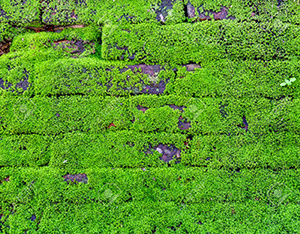
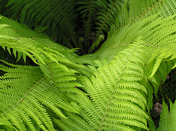
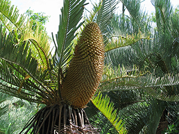
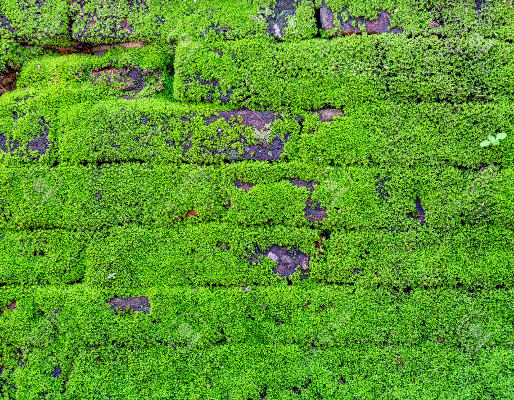
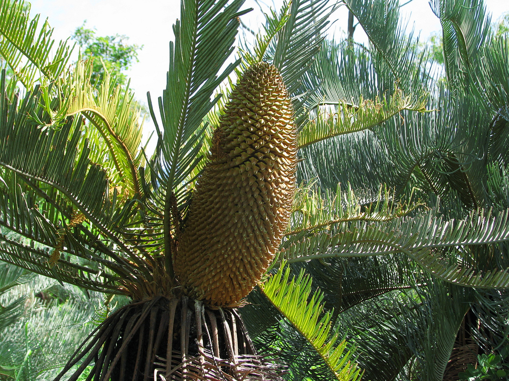

Makhluk hidup dalam Kingdom Plantae adalah organisme eukariota multicell, yaitu makhluk hidup ber-sel banyak yang memiliki membran inti. Semua jenis Plantae merupakan autotrof, selain itu Plantae dibagi lagi menjadi tiga kelas menjadi Bryophyta, Pterydophyta, dan Spermatophyta. Adapun ciri-ciri organisme Plantae, yaitu:
Merupakan organisme Eukariotik atau mempunyai membran inti.
Merupakan organisme Multicell atau tersusun atas banyak sel.
Bersifat Autotrofi yang berarti mampu membuat makanannya sendiri.
Mempunyai dinding sel yang sifatnya kaku (rigid) dan tersusun atas selulosa.
Lebih dikenal sebagai tumbuh-tumbuhan hijau pada umumnya.
Pada umumnya disebut dengan tumbuhan kormofita.
Tahukah kamu apakah itu yang dimaksud kormofita?
Klik disini deh kalau kepo :D
Yang dimaksud dengan kormofita adalah tumbuhan yang sudah dapat dibedakan antara akar, batang dan daun.... WOW!! Nah nambah ilmu kan? dilanjutkan yuk mengenal lebih jauh apa sih itu kelompok kelas Bryophyta, Pterydophyta dan Spermatophyta. Silahkan pilih menu di sebelah kanan ya.
Bryophyta
Bryophyta atau Lumut termasuk dalam divisi Plantae, tetapi tidak memiliki organ sejati seperti batang, daun, atau akar. Mereka memiliki suatu rhizoid kecil yang membuat mereka mampu menempel di tanah. Mereka tumbuh di tempat teduh dan lembab, seperti di hutan hujan. Mengalami metagenesis, perlu diingat bahwa Bryophyta berbeda dengan Lichenes karena sebagian besar mampu berfotosintesis yang terdiri dari satu jenis organisme.
Berdasarkan kelasnya, Bryophyta dapat dikelompokkan menjadi tiga sebagai berikut:
Bryopsida (Lumut Daun),
Lumut daun merupakan tumbuhan lumut yang paling terkenal. Hamparan lumut daun terdiri dari satu tumbuhan lumut daun yang tumbuh dalam kelompok yang padat, sehingga satu sama lainnya bisa saling menyokong dan menguatkan. Hamparan ini memiliki sifat seperti karet busa yang bisa menyerap dan menahan air. Contoh lumut daun adalah Sphagnum.
Hepaticopsida (Lumut Hati),
Lumut hati merupakan lumut yang kurang mencolok penampilannya bila dibandingkan dengan lumut daun. Tubuh masih berupa lembaran (talus) yang terbagi atas beberapa lobus. Bentuknya akan mengingatkan pada lobus hati pada hewan. Karena itu, lumut ini dinamakan lumut hati. Contoh lumut hati adalah Marchantia Polymorpha.
Anthocerotopsida (Lumut Tanduk),
Lumut tanduk mempunyai kemiripan dengan lumut hati, yakni pada gametofitnya. Bedanya, lumut tanduk memiliki sporofit yang berupa kapsul yang memanjang dan tumbuh seperti tanduk dari hamparan gametofit. Contoh lumut tanduk adalah Anthoceros Laevis.
Pterydophyta
Pterydophyta atau paku termasuk dalam divisi Plantae, ia telah memiliki kormus atau jaringan pengangkut dan telah memiliki organ sejati. Mereka bereproduksi aseksual dengan spora. Tumbuhan paku dapat hidup di darat terutama daerah hutan hujan tropis. Namun, ada beberapa jenis paku yang hidup mengapung di air. Seperti halnya bryophyta, pteridophyta juga mengalami metagenesis.
Berdasarkan kelasnya, Bryophyta dapat dikelompokkan menjadi tiga sebagai berikut:
Psilophyta (Paku Purba),
Jenis paku ini sebagian besar telah punah, tumbuhan ini belum berdaun dan berakar, batang telah mempunyai berkas pengangkut, bercabang cabang menggarpu dengan sporangium pada ujung cabang-cabangnya. Contohnya adalah Rhynia Major.
Lycophyta (Paku Rambat),
Jenis paku ini berdaun kecil, tersusun spiral, sporangium terkumpul dalam strobilus dan muncul di ketiak daun, batang seperti kawat. Contohnya adalah Lycopodium Clavatum
Equisetophyta / Sphenophyta,
Jenis paku ini memiliki daun mirip kawat serta daunnya tersusun dalam satu lingkaran. Bentuk batangnya mirip dengan ekor kuda. Contohnya adalah Equisetum Debile.
Pterophyta / Felicinae,
Jenis ini telah memiliki akar, batang, dan daun sejati. Daun umumnya berukuran besar atau disebut juga megafil. Batangnya dapat tumbuh di bawah tanah (seperti rhizoma) ataupun batangnya tumbuh di atas tanah. Ciri yang khas pada divisio ini adalah daun mudanya yang menggulung atau disebut jugacircinnatus dan di bagian permukaan bawah daunnya terdapat sorus.
Spermatophyta
Spermatophyta adalah divisi yang memiliki ciri khas yaitu berbiji. Biji adalah cikal bakal dari individu baru dan merupakan hasil pembuahan antara putik dan benang sari di bunga. Berdasarkan cara perkembangbiakannya, dibagi kedalam dua kelompok yaitu gymnospermae (berbiji terbuka) dan angiospermae (berbiji tertutup). Tumbuhan berbiji terdapat di darat dan beberapa terdapat di air (contohnya teratai).
Berdasarkan kelasnya, Gymnospermae dapat dikelompokkan menjadi empat sebagai berikut:
Kelas Cycadophyta,
Jenis tanaman ini merupakan tumbuhan biji yang primitif, hidup di daerah tropis dan subtropis. Di Indonesia kita kenal Cycas Rumphii (pakis haji). Ciri-ciri tumbuhan ini pada umumnya tidak bercabang atau sedikit memiliki cabang. Contohnya adalah Arecaceae (palem).
Kelas Ginkgophyta,
Jenis tanaman ini hampir punah seperti Ginkgo Biloba, merupakan spesies tunggal dari salah satu divisio anggota tumbuhan berbiji terbuka yang pernah tersebar luas di dunia. Pada masa kini tumbuhan ini diketahui hanya tumbuh liar di Asia Timur Laut.
Kelas Peniphyta,
Jenis tanaman ini berkembang biak dengan biji tunggal, contohnya Cocos Nucifera (kelapa), Allium Cepa (bawang merah).
Kelas Gnetophyta,
Jenis tanaman ini berkembang biak dengan biji tunggal, contohnya Cocos Nucifera (kelapa), Allium Cepa (bawang merah).
Berdasarkan kelasnya, Angiospermae dapat dikelompokkan menjadi dua sebagai berikut:
Kelas Monokotil,
Jenis tanaman ini berkembang biak dengan biji tunggal, contohnya Cocos Nucifera (kelapa), Allium Cepa (bawang merah).
Kelas Dikotil,
Jenis tanaman ini berkembang biak dengan biji ganda, contohnya Arachis Hypogaea (kacang tanah), Citrus (jeruk).
Gallery Foto & Video
Klik gambar dibawah ini untuk membaca deskripsi lebih lanjut

Bryophyta / Lumut
Adalah tumbuhan tidak berpembuluh, tetapi memiliki akar, batang dan daun yang mampu berfotosintesis sehingga berbeda dengan Lichenes.

Dryopteris Filix-Mas
Adalah tumbuhan paku sejati atau tumbuhan paku yang sebenarnya. Umumnya mempunyai ujung daun menggulung dan sporangium terdapat dibawah permukaan daun seperti gambar diatas.

Cycas Platyphylla
Adalah jenis Cycas atau Palem Sago, merupakan tanaman berbiji terbuka.
Ginkgo Biloba
Adalah satu-satunya tanaman langka dari kelas Ginkgophyta.
Bryophyta
Dalam gambar ini adalah lumut daun atau lebih dikenal dengan lumut pada umumnya yang menempel di batu, tembok, tanah atau pohon.

Dryopteris Filix-Mas
Dalam gambar ini merupakan bentuk tumbuhan paku pada umumnya, mudah dikenali dengan bentuk daun lebar meruncing dengan spora-spora di bawah daun mirip jerawat.
Cycas Platyphylla
Dalam gambar ini menunjukkan salah satu ciri-ciri tumbuhan berbiji terbuka, pada umumnya merupakan tumbuhan jenis palem atau tumbuhan yang hidup di padang pasir.

Ginkgo Biloba
Dalam gambar ini merupakan pohon Ginkgo (jenis langka dan hampir punah) yang berasal dari China, ciri khas tumbuhan ini ada pada daunnya yang tipis seperti kipas.